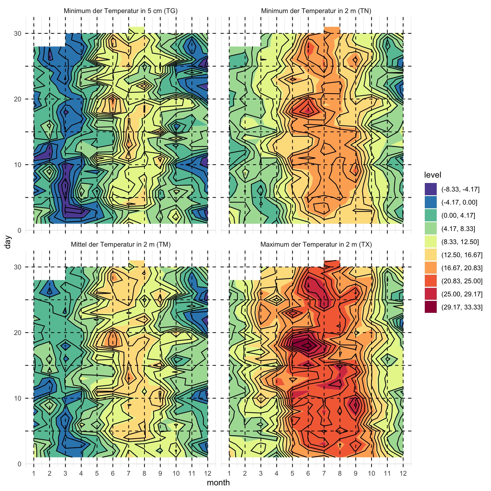

pacman::p_load(tidyverse, magrittr)1 Isoplethendiagramm für Münster & Osnabrück
Version vom March 16, 2023 um 09:30:36
Wir wollen folgende R Pakete in diesem Kapitel nutzen.
Im Folgenden zeige ich ein Beispiel für die Nutzung der entgeltfreien Informationen auf der DWD-Website. Wir finden dort auf der Seite die Klimadaten für Deutschland und natürlich auch die Daten für Münster/Osnabrück. Ich habe mir flux die Tageswerte runtergeladen und noch ein wenig den Header der txt-Datei angepasst. Du findest die Datei day_values_osnabrueck.txt wie immer auf meiner GitHub Seite. Du musst dir für andere Orte die Daten nur entsprechend zusammenbauen. Am Ende brauchen wir noch die Informationen zu den Tages- und Monatswerten damit wir auch verstehen, was wir uns da von der DWD runtergeladen haben. Ich nutze gleich nur einen Ausschnitt aus den Daten.
Wenn wir Geocomputation with R machen wollen, dann haben wir natürlich noch viele andere Möglichkeiten. Das verlinkte Buch hilft da weiter.
Dann lesen wir die Daten einmal ein und müssen dann eine Winkelzüge machen, damit wir aus dem Datum JJJJMMDD dann jeweils den Monat und den Tag extrahiert kriegen. Dann müssen wir die Monatszahl und die Tageszahl noch in eine Zahl umwandeln. Sonst geht es schlecht mit dem Zeichnen des Konturplots. Wir nehmen dann die Temperaturen TG, TN, TM und TX um diese Temperaturen in vier Konturplots zu zeigen.
weather_tbl <- read_table("data/day_values_osnabrueck.txt") %>%
mutate(JJJJMMDD = as.Date(as.character(JJJJMMDD), "%Y%m%d"),
day = as.numeric(format(JJJJMMDD, "%d")),
month = as.numeric(format(JJJJMMDD, "%m")),
year = as.numeric(format(JJJJMMDD, "%Y"))) %>%
select(month, day, TG, TN, TM, TX) %>%
na.omit() %>%
gather(temp, grad, TG:TX) %>%
mutate(temp = factor(temp,
labels = c("Minimum der Temperatur in 5 cm (TG)",
"Minimum der Temperatur in 2 m (TN)",
"Mittel der Temperatur in 2 m (TM)",
"Maximum der Temperatur in 2 m (TX)")))Nachdem wir ordentlich an den Daten geschraubt haben können wir jetzt in Abbildung 1.1 die vier Konturplots sehen. Wir mussten noch das Spektrum der Farben einmal drehen, damit es auch mit den Temperaturfarben passt und wir haben noch ein paar Hilfslinien miteingezeichnet.
ggplot(weather_tbl, aes(month, day, z = grad)) +
theme_minimal() +
geom_contour_filled(bins = 13) +
geom_contour(binwidth = 2, color = "black") +
facet_wrap(~ temp, ncol = 2) +
scale_fill_brewer(palette = "Spectral", direction = -1) +
scale_x_continuous(breaks = 1:12) +
geom_vline(xintercept = 1:12, alpha = 0.9, linetype = 2) +
geom_hline(yintercept = c(5, 10, 15, 20, 25, 30),
alpha = 0.9, linetype = 2)